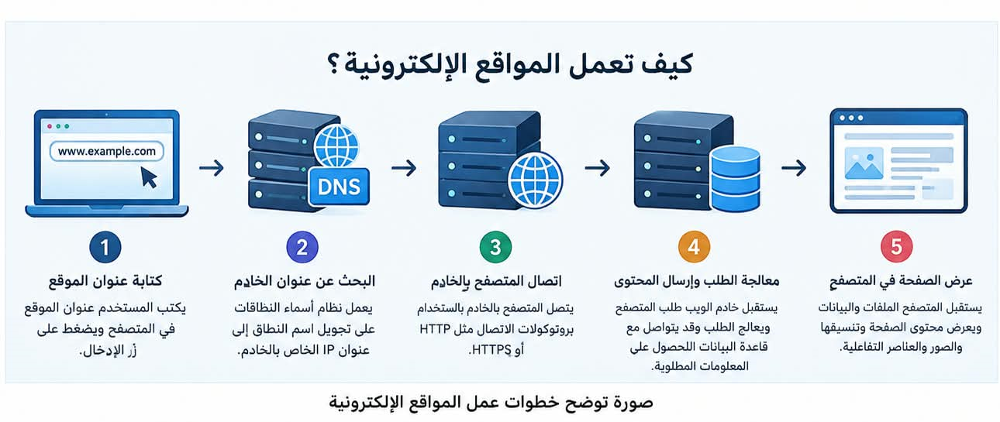

اسم الطالبة: ولاء عصام أبوهاشم موسى
الرقم الجامعي: 2501939
تحت إشراف: د. مها زغلول
الجهة: معهد الدلتا العالي لنظم المعلومات الإدارية والمحاسبية بالمنصورة
أصبحت المواقع الإلكترونية جزءًا أساسيًا من حياتنا اليومية، فنستخدمها في التعلم والتواصل والتسوق والحصول على المعلومات. وتعتمد المواقع الإلكترونية على مجموعة من العناصر التي تعمل معًا حتى يتمكن المستخدم من الوصول إليها بسهولة، مثل اسم النطاق والاستضافة ونظام أسماء النطاقات وخادم الويب والمتصفح.
اسم النطاق (Domain Name) هو العنوان الذي يكتبه المستخدم في متصفح الإنترنت للوصول إلى موقع إلكتروني. وتُستخدم أسماء النطاقات بدلًا من عناوين الإنترنت الرقمية التي يصعب حفظها، مما يجعل الوصول إلى المواقع أسهل.
ويتكون اسم النطاق عادةً من اسم وامتداد، مثل example.com، وتوجد امتدادات مختلفة مثل .com و.org و.edu، كما توجد امتدادات خاصة بالدول مثل .eg الخاص بمصر.
الاستضافة (Web Hosting) هي خدمة توفر مساحة وموارد على خادم متصل بالإنترنت لحفظ ملفات الموقع، مثل صفحات الويب والصور وملفات التنسيق والبرمجة وقواعد البيانات عند الحاجة.
عندما يزور شخص الموقع، يستقبل الخادم طلب المتصفح، ثم يرسل الملفات أو البيانات المطلوبة حتى تظهر الصفحة على شاشة المستخدم.
ويمكن تشبيه اسم النطاق بعنوان المنزل، والاستضافة بالمنزل نفسه، أما ملفات الموقع ومحتواه فتشبه الأشياء الموجودة داخل المنزل.
| نوع الاستضافة | خصائصها ومميزاتها | الفئة المناسبة |
|---|---|---|
| الاستضافة المشتركة | تتشارك عدة مواقع موارد خادم واحد، وتتميز بانخفاض تكلفتها. | المبتدئون وأصحاب المواقع الصغيرة. |
| الخادم الافتراضي الخاص (VPS) | يوفر موارد افتراضية وتحكمًا أكبر من الاستضافة المشتركة. | المواقع التي تحتاج إلى إمكانيات إضافية. |
| الخادم المخصص | يتم تخصيص خادم كامل لجهة واحدة. | المواقع الكبرى والشركات. |
| الاستضافة السحابية | تعتمد على موارد موزعة عبر مجموعة من الخوادم. | المواقع ذات الزيارات المتغيرة. |
عندما يكتب المستخدم عنوان الموقع في المتصفح ويضغط على زر الإدخال، تحدث مجموعة من الخطوات حتى تظهر صفحة الموقع:
توضح الصورة مراحل انتقال البيانات بين المستخدم والمتصفح والدومين وخادم الاستضافة حتى تظهر صفحة الموقع.

| وجه المقارنة | الدومين | الاستضافة |
|---|---|---|
| المعنى | عنوان الموقع الإلكتروني. | مكان حفظ ملفات الموقع. |
| الوظيفة | يساعد المستخدم على الوصول للموقع. | يحفظ الملفات ويتيح عرضها عبر الإنترنت. |
| مثال | example.com | خادم يحتوي على ملفات الموقع. |
يتضح أن الدومين والاستضافة من العناصر الأساسية لإنشاء المواقع الإلكترونية وتشغيلها. فالدومين هو عنوان الموقع الذي يستخدمه الزائر للوصول إليه، بينما الاستضافة هي المكان الذي تُحفظ فيه ملفات الموقع. ويعمل الاثنان معًا حتى يستطيع المستخدم تصفح المواقع والاستفادة من خدماتها بسهولة.